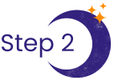

Our dedicated support team is always ready to help.
Focus on providing guidance; we’ll handle any disputes.*
Advertise your services at no additional cost to you.
Take advantage of exclusive perks and special discounts.
*Limitations apply. Please see our Code of Ethics.
We’re looking for gifted psychics with professional experience offering detailed, accurate, and insightful readings.
We work with Guides who uphold the highest standards of ethics and quality and possess a genuine desire to empower Seekers on their life journeys.
Apply NowWe're seeking psychics who are comfortable providing readings by phone, video, and live chat. Experience in these areas is preferred but not required.
We're building a diverse community of psychics and welcoming those who use tools like crystals, runes, and Tarot cards and those who don't. No matter your preferred practice, we encourage you to share your unique gifts with our Seekers.
Whether you specialize in Tarot, astrology, mediumship, intuitive readings, or another area of discipline, we welcome all areas of expertise. If your gifts allow you to work by phone or message, we encourage you to apply.
You’ll complete an application detailing your professional history, skills, and abilities. We will thoroughly review it and schedule an interview if your qualifications meet our criteria.
Apply Now
During your phone interview, a member of our recruiting team will assess your communication skills, professionalism, and approach, as well as answer any questions you might have. Please budget 30-45 minutes for our conversation.
We will then schedule an evaluation, during which our team will assess your ability to adhere to our ethics and quality standards. This evaluation consists of three 15-minute trial sessions.
We require all applicants to pass a basic criminal background check at no cost to you. This process typically takes a few days to complete.
The onboarding process involves reviewing our system guide and ethics code and submitting all necessary paperwork. Once completed, you can create your profile and start receiving calls. Please note that activation timing depends on customer demand.
Seeking answers? Craving guidance but feeling uncertain? You're not alone. We've been there and we understand that new experiences can be stressful. Whether you're seeking guidance on love, career, or spiritual growth, you're here for a reason — discover why in just 3 easy steps.
Here's how you can start experiencing the transformative power of an online psychic reading:
Get ready to embark on a journey of self-discovery, empowerment, and spiritual enlightenment. Connect with one of our trusted Guides today and unlock the secrets of your future!
Want to give it a try? Get 5 minutes' worth of free online psychic readings today! *
Our Guides are skilled psychics mediums online who possess the profound ability to illuminate life's paths with compassion and insight. They foster connections that transcend the ordinary, guiding our Seekers (individuals seeking psychic guidance) toward profound understanding and empowerment.
Psychic online reading sessions offer just as much insight as in-person readings.
Through the power of intuition and empathy, our Guides tune into your energy and provide you with the same level of personalized guidance and support over the phone as they would in person. When you connect with our experienced psychic readers online, you'll receive guidance from the comfort of your own home at a time that works best for you and without the need to travel.
We have a fair feedback and dispute process that supports both the Seeker and the Guide.
Our Guides understand the sensitive nature of the information shared during psychic readings and are committed to maintaining the highest standards of confidentiality and professionalism. Whether you're communicating with your psychic via phone, video call, or chat, your conversations are protected from unauthorized access.
If you prefer to remain anonymous during your psychic reading, you have the option to use a pseudonym or nickname instead of your real name. Your psychic will respect your privacy and address you by the name you choose.
For further information on how we safeguard your privacy, see our Privacy Policy.
Before the reading, find a quiet and comfortable space where you won't be interrupted, and make sure you have a reliable internet connection or phone signal. Take some time to quiet your mind and set your intentions. Reflect on the areas of your life where you're seeking guidance and clarity, and consider jotting down any questions or concerns you'd like to address during the session.
Your session will begin with an introduction and a brief explanation of how the reading will proceed. Your Guide will create a supportive and nonjudgmental atmosphere to help you feel comfortable and relaxed.
You can ask your Guide about any area of your life where you're seeking guidance. Your Guide will tap into their intuitive abilities to provide insights, messages, and guidance that resonate with your energy and circumstances.
They may use divination tools such as Tarot cards, astrology charts, or intuitive impressions to enhance the clarity and depth of the reading. Your Guide may also provide practical advice, suggestions, or action steps to help you navigate through challenges and obstacles, seize opportunities, and manifest your goals and desires.
After the reading, take some time to reflect on the insights and guidance you received. If you have any follow-up questions or need further clarification, reach out to your Guide.
If you find yourself dissatisfied with your reading, you have options for resolution:
If you encounter any dissatisfaction, don't hesitate to reach out — we're here to support you every step of the way.
There are certain topics that are typically outside the scope of psychic readings due to ethical and practical considerations. These topics include legal matters, serious health concerns, investment advice, predictions of death or harm, and nonconsensual third-party readings.
Topics in our scope of readings include:
If you have questions or concerns about specific topics outside the scope of our psychic readings, it's best to seek guidance from qualified professionals in those fields.
Have further questions? Contact our hiring team at hr@iop.works.